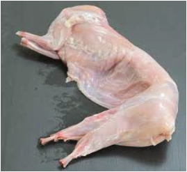

Slaughtering of rabbits
Field dressing employed in large animals is applied to rabbits. Slaughtering
can be done using any clean, sharp cutting instrument. Alternatively, a hopper
popper facility is recommended to dislocate the cervical spine of the rabbit. After
slaughter, the rabbit is skinned to get the rabbit meat, as described herein.
(a) Skinning rabbits: The process entails the following steps:
(i) Make a slot/cut in the skin across the back;
(ii) Grasp a fold of skin on each side of a cut and pull in opposite directions.
The skin pulls away easily; then,
(iii) Remove the head, feet, and the tail; you have the skinned rabbit with its
digestive and respiratory organs.
(b) Dressing of the rabbit: The following procedure demonstrates the process
of dressing the rabbit. This procedure applies to all small farm animals like
guinea pigs and squirrels. Dressing steps are:
(i) Place the knife or blade at the anus and cut through the skin and
pelvic bone;
(ii) Cut up through the breastbone while your fingers are placed under
the knife to avoid cutting off the internal organs;
(iii) Separate the esophagus and windpipe together with their entrails
from the rest of the body;
(iv) Clean the cavity. At this point, you have the dressed rabbit meat.
Figures 8.4 (a) and 8.4 (b) show rabbit meat and rabbit meat portions,
respectively; then,
(v) Wipe out the cavity and allow it to cool.
Figure 8.4 (a): Dressed rabbit

Figure 8.4 (b): Butchered rabbit